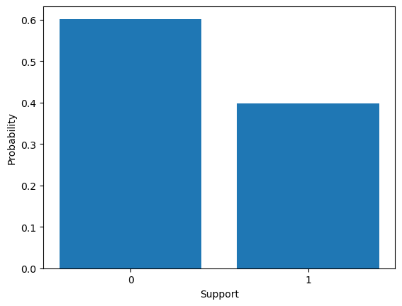

#Important libraries
import numpy as np
import matplotlib.pyplot as plt
import torch
import torch.distributions as dist
import math
from tueplots import bundles
plt.rcParams.update(bundles.beamer_moml())
from IPython.display import Image
import warnings
warnings.filterwarnings('ignore')
%matplotlib inlineDifferent Distribution Samples
Bernoulli, Categorical, Uniform, Normal, Beta and Gamma distributions
Some imports
Notes
TUEplots: Extend matplotlib for scientific publications
A function to make the Matplotlib plots prettier
SPINE_COLOR = 'red'
def format_axes(ax):
for spine in ['top', 'right']:
ax.spines[spine].set_visible(False)
for spine in ['left', 'bottom']:
ax.spines[spine].set_color(SPINE_COLOR)
ax.spines[spine].set_linewidth(0.5)
ax.xaxis.set_ticks_position('bottom')
ax.yaxis.set_ticks_position('left')
for axis in [ax.xaxis, ax.yaxis]:
axis.set_tick_params(direction='out', color=SPINE_COLOR)
return axPre-defined values
n_samples=10000
seed=42
p=0.4
num_categories=5Uniform distribution
A continuous random variable X is said to have a Uniform distribution over the interval [a,b] , shown as X∼Uniform(a,b) , if its PDF is given by \[ X(x) = \begin{cases} 1 & \text{if } a < x < b \\ 0 & \text{if } b \leq x < a \\ \end{cases} \]
We can also plot and visualise the same phenomenon using a histogram shown below.
distribution = torch.distributions.Uniform(0, 1)
random_numbers = distribution.sample((n_samples,))
plt.hist(random_numbers.numpy(), bins=20)
format_axes(plt.gca())<Axes: >
We can notice that all outcomes within a given range are equally likely , ploted as a rectangular graph.
Bernoulli distribution
Bernoulli Distribution is a discrete probability distribution used for experiments with yes/no outcomes. It represents a single trial with two possible outcomes: success (1) with probability p or failure (0) with probability (1 - p).
\[ f(x, p) = \begin{cases} p & \text{if } x = 1 \\ 1 - p & \text{if } x = 0 \\ \end{cases} \]
We can also express this formula as: \[ PMF = f(x, p) = px(1 - p)^{1 - x}, \text{ where } x \in \{0, 1\} \]
from torch.distributions import Bernoulli
p=torch.tensor(p)
Bernoulli_samples = Bernoulli(probs=p,logits=None).sample((n_samples,))
plt.hist(Bernoulli_samples.numpy(), bins=3)
plt.xticks([0, 1], ['0', '1'])
format_axes(plt.gca())<Axes: >
Important things to note
probs: Directly known probability values (0-1), providing a direct interpretation of probabilities.
logits: Log-odds or transformed probabilities (using sigmoid) useful for like LR or NN models outputting logits.
Categorical distribution
Story - In a set of discrete outcomes, each outcome is assigned a probability.
Example - The student has a \(p_{a}\) probability of studying, a \(p_{b}\) probability of going out with friends, and a \(p_{c}\) probability of watching a movie.
\[ f(x; p_1, p_2, ..., p_k) = \begin{cases} p_1 & \text{if } x = 1 \\ p_2 & \text{if } x = 2 \\ \vdots \\ p_k & \text{if } x = k \\ \end{cases} \]
from torch.distributions import Categorical
categorical_distribution = Categorical(torch.ones(num_categories))
categorical_numbers = categorical_distribution.sample((n_samples,))
category_counts = torch.bincount(categorical_numbers)
# Compute the probabilities
probabilities = category_counts / n_samples
plt.bar(range(len(probabilities)), probabilities)
format_axes(plt.gca())<Axes: >
Support - If we index the categories with sequential integers from 1 to N, the distribution is supported for integers 1 to N, inclusive when described using the indices of the categories.
Normal distribution
Story - The normal distribution arises when many small factors contribute to a quantity without any extreme variations, resulting in a bell-shaped curve.
Example - When measuring the heights of a large population, we typically find that the distribution follows a bell-shaped curve, with the majority of individuals clustering around the average height and fewer individuals at the extremes (very tall or very short)
\[ f(x|\mu, \sigma) = \frac{1}{\sqrt{2\pi\sigma^2}} e^{-\frac{(x-\mu)^2}{2\sigma^2}} \]
Moments
Mean: \(\mu\) , Variance: \(\sigma\)
from torch.distributions import Normal
mean = torch.tensor([0.0])
stddev = torch.tensor([1.0])
dist = Normal(mean, stddev)
x = np.linspace(-5, 5, 100)
# Calculate the corresponding probability density for each x
pdf = torch.exp(dist.log_prob(torch.tensor(x))).numpy()
# Plot the normal distribution
plt.plot(x, pdf)
format_axes(plt.gca())<Axes: >
import numpy as np
import matplotlib.pyplot as plt
# Set the mean and standard deviation of the original normal distribution
mu = 0
sigma = 1
# Set the desired mean and standard deviation of the converted normal distribution
a = 5
b = 2
# Generate random samples from the standard normal distribution
x = np.random.normal(mu, sigma, 1000)
# Apply the transformation to convert to the desired normal distribution
y = a + b * x
# Plot the histogram of the converted normal distribution
plt.hist(y, bins=20, density=True, alpha=0.5)
plt.xlabel('Value')
plt.ylabel('Density')
plt.title(f'Normal Distribution: μ = {a}, σ = {b}')
plt.show()
Beta distributions
Story : Let’s say you have two processes, each consisting of multiple steps. Both processes occur at the same rate, but the first process requires \(\alpha\) step and the second process \(\beta\) ,the fraction of the total waiting time taken by the first process is Beta distributed .
Example : Include the Click-Through Rate (CTR) of an advertisement, the conversion rate of customers purchasing on your website.
\[f(x; \alpha, \beta) = \frac{x^{\alpha-1} (1-x)^{\beta-1}}{B(\alpha, \beta)}\]
where
\[B(\alpha, \beta) = \int_0^1 x^{\alpha-1} (1-x)^{\beta-1} dx\]
Support : The Beta distribution has support on the interval [0, 1].
Moments :
\(\mu = \frac{\alpha}{\alpha + \beta}\)
\(\sigma^2 = \frac{\alpha \beta}{(\alpha + \beta)^2 (\alpha + \beta + 1)}\)
alpha = 2
beta = 7
# Create a Beta distribution object
beta_dist = torch.distributions.Beta(alpha, beta)
samples = beta_dist.sample((n_samples,))
samples_np = samples.numpy()
plt.hist(samples_np, bins=30, density=True)
# Plot the probability density function (PDF)
x = torch.linspace(0, 1, n_samples)
pdf = beta_dist.log_prob(x).exp()
plt.plot(x.numpy(), pdf.numpy(), 'r-', linewidth=2)
format_axes(plt.gca())<Axes: >
Gamma distrubution
import torch
import matplotlib.pyplot as plt
# Set the parameters for the Gamma distribution
alpha = 2.0
beta = 1.0
# Create a Gamma distribution object
gamma_dist = torch.distributions.Gamma(alpha, beta)
# Generate samples from the distribution
samples = gamma_dist.sample((n_samples,))
# Convert samples to numpy array
samples_np = samples.numpy()
# Plot the histogram of samples
plt.hist(samples_np, bins=30, density=True)
# Plot the probability density function (PDF)
x = torch.linspace(0, 10, 1000)
pdf = gamma_dist.log_prob(x).exp()
plt.plot(x.numpy(), pdf.numpy(), 'r-', linewidth=2)
# Add labels and title
plt.xlabel('X')
plt.ylabel('Probability Density')
plt.title('Gamma Distribution')
# Display the plot
plt.show()Implementing a pseudo-random number generator (PRNG)
Implementing a pseudo-random number generator (PRNG) - Generates a sequence of numbers that exhibit properties of randomness
Linear Congruential Generator (LCG) is a simple PRNG algorithm - The LCG algorithm is defined by the recurrence relation:
\(X_{n+1} = (a \cdot X_n + c) \mod m\)
- \(X_{n+1}\) is the Next pseudo-random number.
- \(X_n\) is the current pseudo-random number.
- \(a\) is the multiplier , determines the period of the generated number.
- \(c\) is the increment, shifts the generated sequence.
- \(m\) is the modulus, determines the range of values .
Integer Constant
\(m,{0<m}\) — The modulus
\(a,0<a<m\) — The multiplier
\(c,0<=c<m\) — The increment
\(X_{0},0<X_{0}<m\) — The seed / start value
# Function for Linear Congruential Generator
def lcg(seed, n_samples):
"""
Generates a sequence of pseudo-random numbers using the Linear Congruential Generator (LCG) algorithm.
Args:
seed (int): The seed value for the LCG algorithm.
n_samples (int): The number of random numbers to generate.
Returns:
list: A list of pseudo-random numbers normalized to the range [0, 1].
"""
a = 1103515245
c = 12345
m = 2 ** 31
random_numbers = []
for _ in range(n_samples):
seed = (a * seed + c) % m
random_number = seed / m # Normalize to range [0, 1]
random_numbers.append(random_number)
return random_numbersPlot histogram
# Example usage:
random_numbers = lcg(seed, n_samples )
plt.hist(random_numbers, bins=20)
plt.xlabel('Random Number')
plt.ylabel('Frequency')
plt.title('Histogram of Pseudo-random Numbers')
plt.show()
Uniform to Normal sampling
Box Muller Method
def uniform_to_normal_boxmuller(n_samples):
"""
Generates a sequence of pseudo-random numbers from a standard normal distribution using the Box-Muller method.
Args:
n_samples (int): The number of random numbers to generate.
Returns:
torch.Tensor: A tensor of pseudo-random numbers following the standard normal distribution.
"""
uniform_distribution = dist.Uniform(0, 1)
random_numbers = []
for _ in range(n_samples // 2):
u1 = uniform_distribution.sample()
u2 = uniform_distribution.sample()
z1 = torch.sqrt(-2 * torch.log(u1)) * torch.cos(2 * math.pi * u2)
z2 = torch.sqrt(-2 * torch.log(u1)) * torch.sin(2 * math.pi * u2)
random_numbers.append(z1)
random_numbers.append(z2)
if n_samples % 2 != 0:
u = uniform_distribution.sample()
z = torch.sqrt(-2 * torch.log(u)) * torch.cos(2 * math.pi * uniform_distribution.sample())
random_numbers.append(z)
return torch.stack(random_numbers)In Normal Distribution Values are symmetrically distributed around a central mean. For example, heights in a population follow a bell-shaped curve, with the most common values near the mean and fewer occurrences as we move away from it. Graphically, it is represented by a bell-shaped curve.